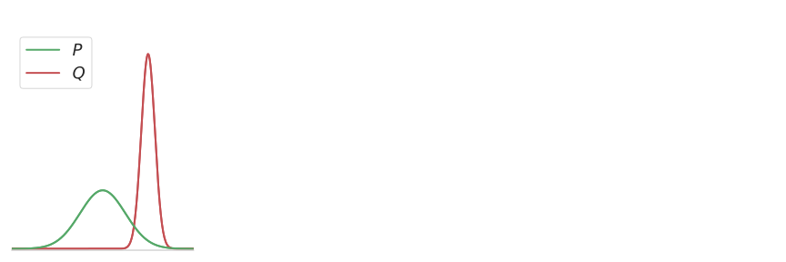
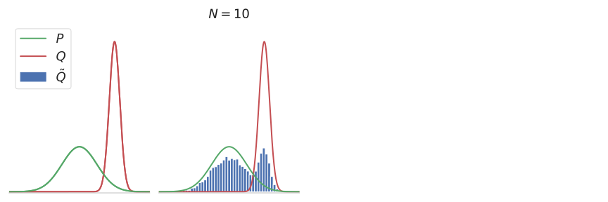
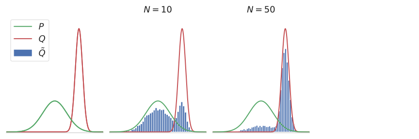
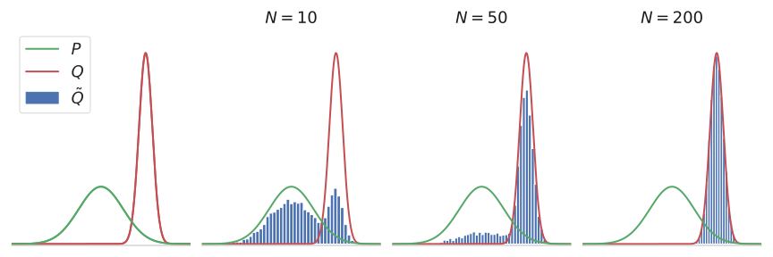
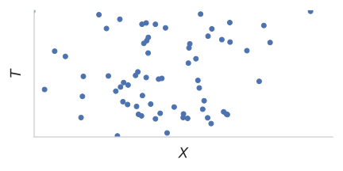
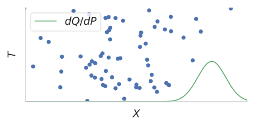
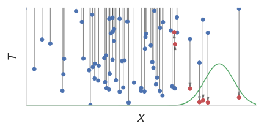
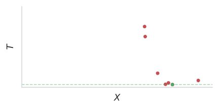

Some Notes on the Sample Complexity of Approximate Channel Simulation
Gergely Flamich and Lennie Wells
07/06/2024
gergely-flamich.github.io
Studying channel simulation helps approximate sampling!
Approximate Sampling




If we want \(TV[Q\, || \tilde{Q}] \leq \epsilon\), how big should \(N\) be?
Idea: Use exact sampler
\(K\) - selection rule of exact sampler
\begin{align*}
TV[Q\, || \tilde{Q}] &= \mathbb{P}[K > N] \cdot TV[Q\, || P] \\
& \leq \mathbb{P}[K > N]
\end{align*}
Block and Polyanskiy (2023):
\[
N \geq {\color{blue}\frac{2}{1 - \epsilon} \log \left(\frac{2}{\epsilon}\right)} \exp\left(\frac{{\color{red}4} \cdot KL[Q\, ||\, P]}{\epsilon}\right)
\]
Poisson Functional Representation
\(X_1, X_2, \dots\) where \(X_i \sim P\)
Augment with Poisson process \(T_1, T_2, \dots\)
Select \(K = \mathrm{arg\,min}_{k \in \mathbb{N}}\left\{T_k \Big/ \frac{dQ}{dP}(X_k)\right\}\)
Poisson Functional Representation
\(K = \mathrm{arg\,min}_{k \in \mathbb{N}}\left\{T_k \Big/ \frac{dQ}{dP}(X_k)\right\}\)




How is this useful?
\begin{align*}
\mathbb{P}[K > N] \color{white} = \mathbb{P}[\log K > \log N]
\leq \frac{\mathbb{E}[\log K]}{\log N} = \epsilon
\end{align*}
\begin{align*}
\mathbb{P}[K > N] = \mathbb{P}[\log K > \log N]
\color{white} \leq \frac{\mathbb{E}[\log K]}{\log N} = \epsilon
\end{align*}
\begin{align*}
\mathbb{P}[K > N] = \mathbb{P}[\log K > \log N]
\leq \frac{\mathbb{E}[\log K]}{\log N} \color{white} = \epsilon
\end{align*}
\begin{align*}
\mathbb{P}[K > N] = \mathbb{P}[\log K > \log N]
\leq \frac{\mathbb{E}[\log K]}{\log N} = \epsilon
\end{align*}
Hence, to ensure \(TV[Q\, || \tilde{Q}] \leq \epsilon\), pick
\[
N \geq \exp\left( \frac{\mathbb{E}[\log K]}{\epsilon} \right)
\]
Li and El Gamal (2018): \(\mathbb{E}[\log K] \leq KL[Q\, ||\, P] + e^{-1} + \log 2\)
Final Result
\[
N \geq \exp\left( \frac{KL[Q\, ||\, P] + e^{-1} + \log 2}{\epsilon} \right)
\]
Furthermore:
\[
\mathbb{H}[K] \leq KL[Q\, ||\, P] + \log (KL[Q\, ||\, P] + 1) + \mathcal{O}(1)
\]
Contributions
- Demonstrated that results from channel simulation can be used to improve approximate sampling bounds
- For general \(f\) - divergences, improve bound to
\[
\log\left(\frac{1}{(1 - \gamma) \epsilon}\right) \left(f'\right)^{-1}\left( \frac{D_f[Q\, ||\, P]}{\gamma \epsilon} \right) \quad \gamma \in (0, 1)
\]
- See paper for additional sampling complexity bounds.
References
- Block, A., & Polyanskiy, Y. (2023, July). The sample complexity of approximate rejection sampling with applications to smoothed online learning. In The Thirty Sixth Annual Conference on Learning Theory (pp. 228-273).
- Li, C. T., & El Gamal, A. (2018). Strong functional representation lemma and applications to coding theorems. IEEE Transactions on Information Theory, 64(11), 6967-6978.
More general bounds
Block and Polyanskiy (2023):
\[
N \geq {\color{blue}\frac{2}{1 - \epsilon} \log \left(\frac{2}{\epsilon}\right)} \left(f'\right)^{-1}\left(\frac{{\color{red}4} \cdot D_f[Q\, ||\, P]}{\epsilon}\right)
\]
Ours: for \(\gamma \in (0, 1)\)
\[
N \geq {\color{blue}\log\left(\frac{1}{(1 - \gamma) \epsilon}\right)} \left(f'\right)^{-1}\left( \frac{D_f[Q\, ||\, P]}{\gamma \epsilon} \right)
\]